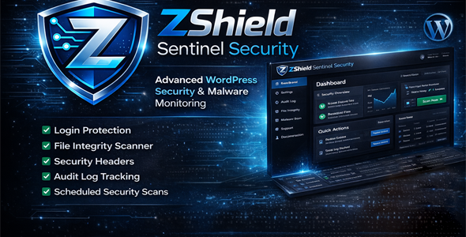
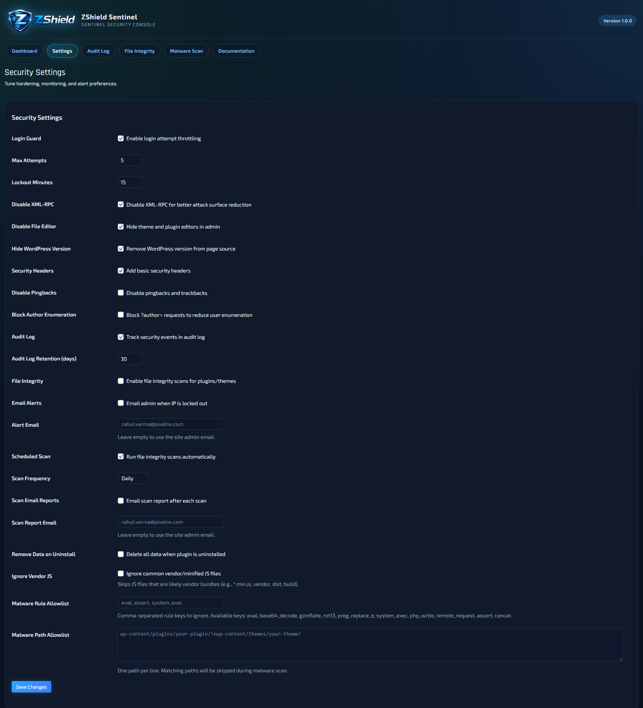
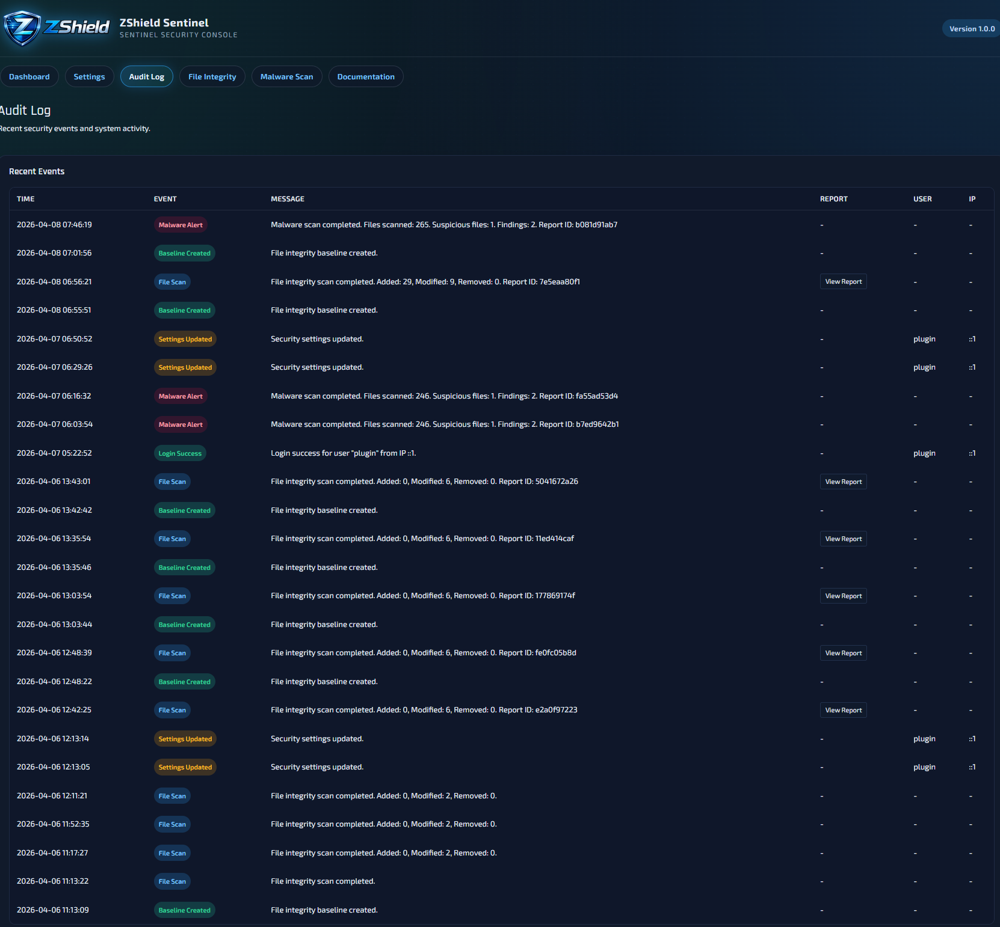
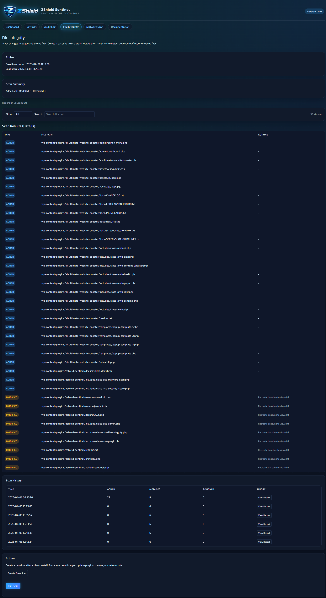
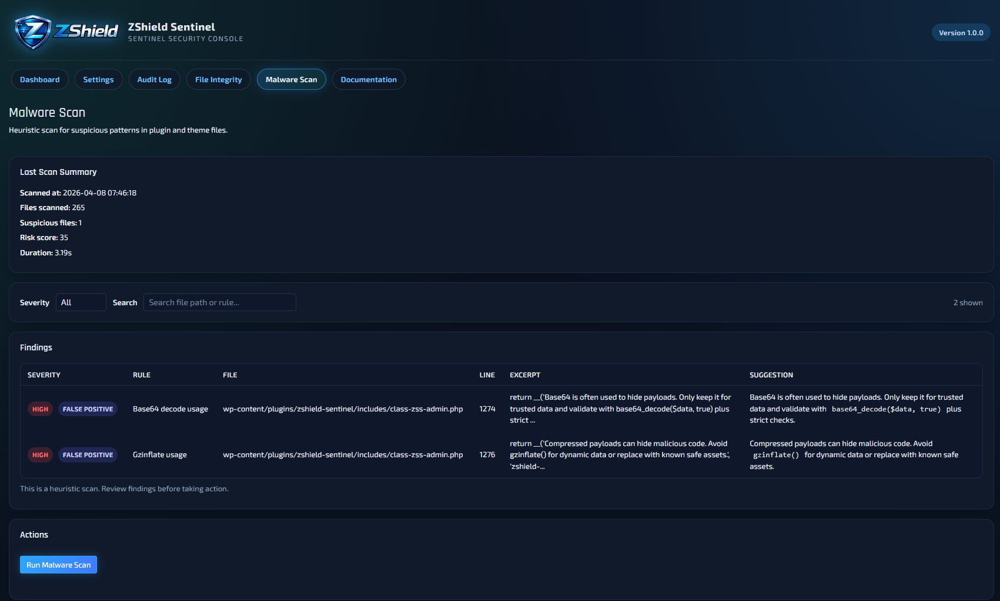
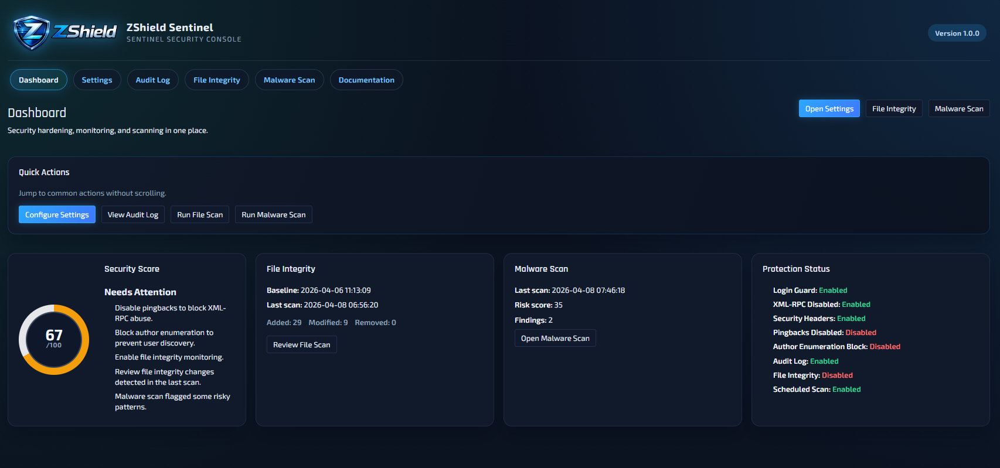

ZShield Sentinel hardens WordPress, monitors logins, tracks file integrity, and runs malware scans in a single dashboard. Designed for agencies, freelancers, and teams that need real‑time visibility without complexity.
Instant posture summary with actionable tips.
Baseline + diff preview to catch tampering.
Track logins, scans, and admin changes.

Everything you need to secure WordPress, packaged in one professional console.
Limit login attempts, lock out brute‑force IPs, and receive instant alerts.
Disable XML‑RPC, pingbacks, file editor, and hide WP version in seconds.
Track failed logins, lockouts, scans, and configuration changes.
Create a baseline and spot added, modified, or deleted files with diffs.
Detect suspicious code patterns with severity ranking and smart guidance.
Get instant notifications for lockouts and scheduled scan reports.
Enable recommended protections and improve the score instantly.


Know exactly what changed in plugins and themes.
Stay ahead of intrusions and suspicious code in minutes.

Follow a clean, repeatable process every week.
Upload plugin ZIP and activate in WordPress.
Enable hardening, login guard, and alert email.
Baseline after clean updates to track changes.
File integrity + malware scans after updates.
Audit log for lockouts and suspicious activity.
A polished admin UI designed for clarity and speed.


Stay protected even when you are offline.
No. It hardens WordPress and monitors changes. Use a WAF for extra protection.
Weekly is enough for stable sites. Run a scan after any updates.
Logs are stored in the database. Export support can be added on request.
Launch with ZShield Sentinel and manage security in minutes.